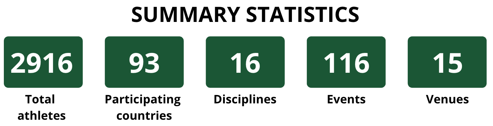

Figure 1.1: Bubbles. Key Statistics (Nb. of Athletes/Nb. of Countries/Nb. Disciplines/Nb. Events/Nb. Venues).
Figure 1.2: Interactive map. Mouse-on venue symbols expands the symbol with the present disciplines/events which are clickable and redirect to the official event webpage.
Figure 1.3: Sorted horizontal bar chart (see 7.2 slide 24). Percentage of venue exploitation. Figures can be linked and shown side by side with the one below.
Figure 1.4: Treemap (see 5.1 slide 31). Split into disciplines and again into events. Area proportional to medal amount (insight into most impactful sports for medal count). Animated by indicating the victors with mouse-on.
Figure 1.5: Sorted horizontal bar chart (see 7.2 slide 24). Classic Medal Race (with numerous filters (discipline/event/country region/gender/team event vs. individual vs. duo etc.)).
Figure 2.1: Sorted horizontal bar chart (see 7.2 slide 24). Athlete count per discipline. Filter by country on world map (see below). Figures can be linked and shown side by side with the one below.
Figure 2.2: Interactive map (similarity to example shown in class). Dots (1 per athlete) travel from their country of origin to the games. Filter by clicking on the country/by global region. Filter impacts the above bar chart. Mouse-on shows other key country statistitcs.
Figure 3.1: Symmetrical gender horizontal bar plot per country (see 6.1 slide 37). Filter by global region or by country.
Figure 3.2: Symmetrical solo vs. team horizontal bar plot per country (see 6.1 slide 37). Filter by global region or by country. Button to synchronize filters with above plot.
Figure 4.1: Moving around bubbles. Conclusion with the main takeaways for the different visualizations.